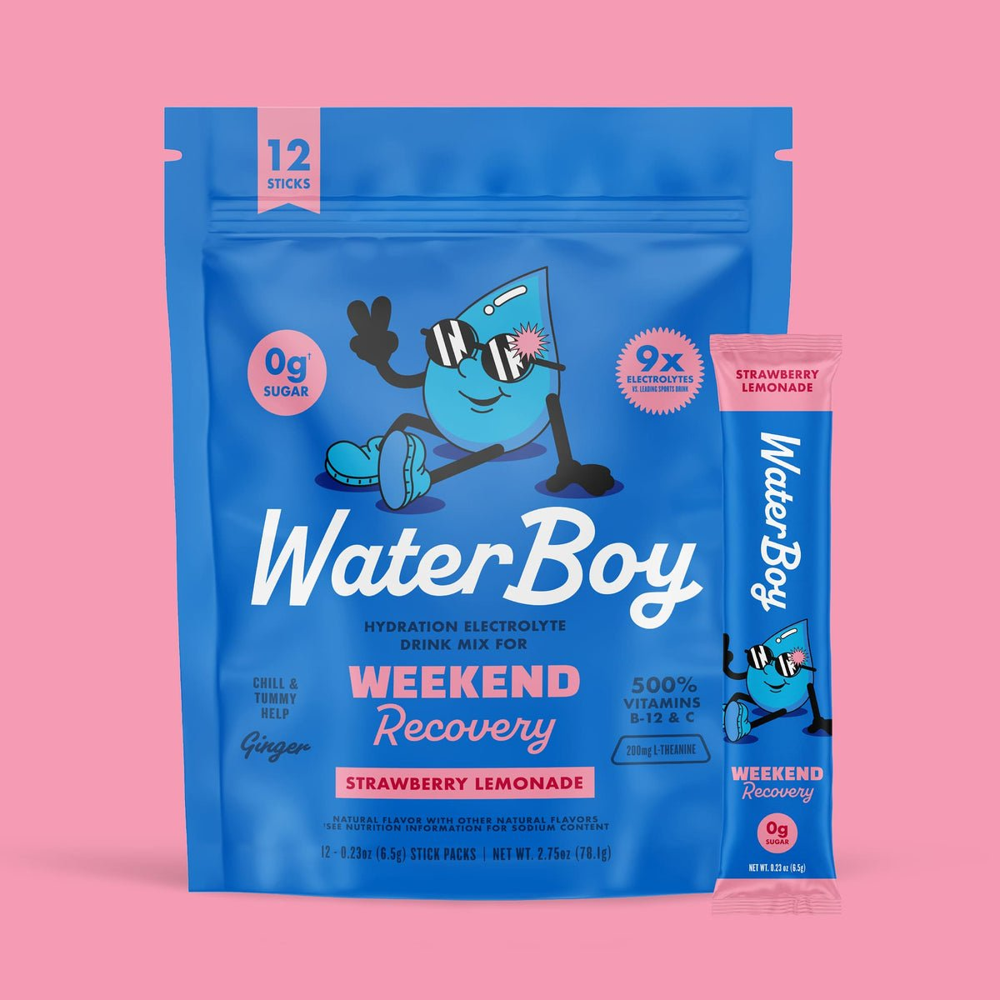

The Responsible Thing You Do Every Saturday Night That Still Costs You Sunday, and the 30-Second Habit Two Friends Use to Keep Theirs
Water pays back the water a big night takes out of you. It doesn't pay back the salt. Two friends put the salt, and the rest of their morning-after routine, in one stick and stopped writing off Sundays. It takes 30 seconds before bed.

You did everything right.
Two big glasses of water before bed. Another one the second you woke up. Maybe a sports drink from the gas station on the way home.
And it's still 11:40 on Sunday. The blinds are still shut. You still feel like a phone at 3% battery.
Brunch with your friends just turned into a delivery order. The long run turned into a nap. The game you planned your whole day around, you'll half watch from the couch. And somewhere in the back of your head, Monday is already loading.
That's the real price of a big Saturday night. It doesn't cost you one night. It costs you one night and the best day of your week.
Here's the strange part. The most responsible thing you did all night, drinking all that water, only paid back part of what you owed.
To see why, meet two guys who lost a lot of Sundays before they figured it out.
Two friends, a lot of lost Sundays
Mike and Connor started Waterboy. Before that, they were just two friends who went out a lot. In their words: "Sometimes we'd go out with friends and one drink would turn into many. Next thing you know, we'd wake up with a headache and a questionable IG story. Just traded 4 hours of fun for 24 hours of misery. Not a good investment."


So they did what a lot of people do. They built a routine. Here it is, as they describe it, plus the step everyone adds:
- Chug a PedialyteTo put back electrolytes.
- Chew some raw gingerYes, raw.
- Mix an Emergen-CFor the vitamin C.
- Take L-theanineAn amino acid found in tea.
- Hope.Lie down. Repeat as needed.
Five steps, a grocery bag, and a pharmacy run, every weekend. As they put it: "the last thing you want to do when you are hungover is run your own science lab and 5 step recipe."
Look at that list again, though. Only one step puts back something plain water can't. And it's the step most people skip.
Why water only pays back the water
A night out makes you pee more. That's why the bathroom line at the bar never ends.
What you pee out isn't only water. Sodium, potassium and magnesium go with it. These are the salts your body uses to keep water where it belongs.
So by morning, you owe your body two things: water and salt. Call it a salt debt.
Saturday night is a withdrawal. A glass of water pays one line of a two-line bill.
You can be the most responsible person at the party, drink glass after glass, and still wake up with the salt line of the bill unpaid. That isn't you being dramatic. It's math nobody showed you.
And the usual backups don't settle it either. Classic sports drinks bring plenty of sugar to a morning you're already dragging through. Plenty of popular electrolyte sticks carry under 900mg of electrolytes, and some add sugar. Coffee and a breakfast sandwich are good for morale and do nothing for the debt.
So they put the whole routine in one stick
Mike and Connor took the routine they trusted, turned it into a powder and put it in a stick you can carry in a back pocket. They called it Weekend Recovery. What's in each one, straight from the label:
The five-step routine, in one stick
| The old routine | In Weekend Recovery |
|---|---|
| Step 1: Pedialyte, for electrolytes | 3,205mg electrolytes: 1,120mg sodium, 1,690mg chloride, 350mg potassium, 50mg magnesium |
| Step 2: raw ginger | Ginger root extract |
| Step 3: Emergen-C | Vitamin C, 500% of the daily value, plus B12 at 500% |
| Step 4: L-theanine | L-theanine, the amino acid found in tea |
| The sugar most drinks add | 0g sugar. A little organic stevia. No caffeine. |

Bookend the night: 30 seconds, two sticks
- One stick before bed.Or while you're still out. No caffeine, so it's an easy one at 1 a.m.
- One stick with breakfast.Mix into 16 to 32 oz of water. Less water tastes bolder and saltier; more tastes lighter.
That's the whole routine. One stick at each end of the night instead of five things in the middle of your Sunday.
What Sunday looks like when it's yours
Picture it. Saturday, you go out and have your fun. Before bed, you tear open a stick and mix it into a big glass of water. Sunday, one more with breakfast.
Then the day goes back to being yours. Brunch with the people you were out with, where you're the one telling the stories instead of the one ordering dry toast. The long run you said you'd do. Groceries, laundry, the call to your mom. Monday shows up and you meet it on your feet.
We can't promise you'll feel like you stayed in. Nobody honest can. What we can promise is what's in the stick, printed on the label, and a routine simple enough to remember at 1 a.m.
The honest part
It tastes salty. On purpose. That's the 1,120mg of sodium doing its job. Most people say the flavor balances it ("There is a perfect balance between salty and sweet."). Some mix it into a bigger bottle. A few people just don't like salty drinks, and that's fair.
It costs about $1.67 a stick when you subscribe ($2.08 if you buy once). Two sticks for a big night is $3.34. Brunch is $30. Losing the whole day costs more than both.
It's not a miracle. The founders say it best: "It's not a miracle cure, but it's a much better way to feel less shitty for $2." It can't undo the night. It puts back what the night took out.
What people say after a weekend
I usually get one before I go to bed after a night of drinking. Sometimes I need another in the morning.
Whenever I wake up dehydrated, I always pound a weekend recovery with water. Seems to do the trick. You can feel the salt getting back into your body.
One if these in the morning after a good night out, really helps get my day back on track and moving.
Great recovery the day after a night of drinking
4.7 out of 5 from 10,497 reviews on waterboy.com. Individual experiences vary.

Weekend Recovery, 12 sticks
- 12 sticks: six bookended nights
- 3,205mg electrolytes, 0g sugar, no caffeine
- Five flavors, or a Sample Pack to try them
- Skip, modify or cancel by text
- Two pouches ship free (orders of $35.99 or more)
Questions people ask
Isn't this just salt water?
Mostly salt, on purpose. Sodium, potassium and magnesium are the salts a night out takes with it, and the part water can't replace. Weekend Recovery adds ginger root extract, L-theanine and vitamins C and B12, with zero sugar.
When do I take it?
One before bed (or while you're still out), and one with breakfast.
Does it have caffeine or sugar?
No caffeine. 0g sugar. It's sweetened with a small amount of organic stevia.
How much water do I mix it with?
16 oz for a bolder, saltier taste. Up to 32 oz for a lighter one.
Is a lot of sodium OK for me?
Each stick has 1,120mg of sodium. If you watch your sodium, are pregnant or have a health condition, check with your doctor first.